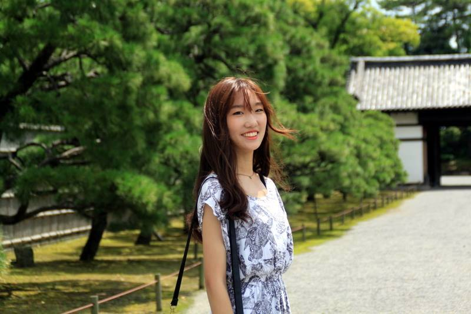
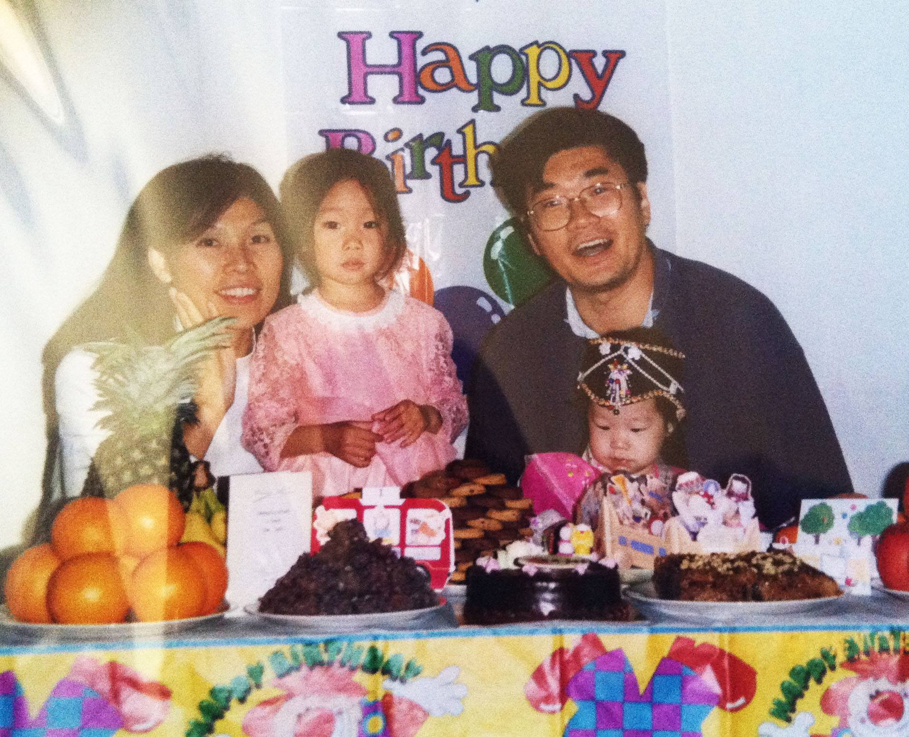

Hello! Bonjour! Hejsan! Annyeonghaseyo!
My name is Ciel and I am a professional traveler from Stockholm, Sweden. You might be wondering – what is a professional traveler? And my answer to you is simple – I call myself a professional traveler because...
- I travel for a living.
- Traveling all across the world is what I do best!
My interest in traveling came very early in my life and ever since then my mission was to find a profession where I was able to continue being exposed to many different cultures and environment. I found myself steady jobs – everything from working in a small traveling agency in Stockholm to a job at the Korean embassy in Sweden – but nothing fully quenched my thirst.
I wanted to really go out there and first-handedly experience the world. So that is exactly what I decided to do.
My current mission since September 2016 is a travel plan to lose myself to nature and roam wherever the wind blows through all four seasons.
My blog will serve as a journal of my year-long experience.
Some call me crazy, some call me idealistic!
But I love those words because life is too short NOT to be crazy nor idealistic.
I live a dream and I love it.
Nevertheless, here, in my attempt to help YOU understand ME better,
I would like to introduce you to the story of my family and my upbringing.
My History
My parents met right after their college years in South Korea, introduced to each other through mutual friends. Like big fish in a little pond, both my parents were born and raised in very small towns in South Korea but had big ambitions that their small towns unfortunately did not promise. My father dreamed of seeing the bigger world, my mother dreamed of being a part of it. As if fate was giving them a chance, my father got accepted into grad school at the University of Wisconsin-Madison. He proposed to my mother and as soon as they got married they traveled across the world to a neighborhood where they were neither familiar with the language, nor the people, nor the culture. That was where their journey began, and that was where I was born.
After I was born, my dad received his degree and our family moved to Japan – where my sister was born. And after another four years of building a life there we moved to Stockholm, Sweden, where my sister and I grew up breathing, understanding and becoming too familiar with the Swedish culture.
In one way or another, my parents’ dreams of seeing the bigger world had expanded over to my sister and me; we grew up traveling endlessly, drifting wherever the road took us, visiting places like the fjords of Norway and the deserts of Spain. With every opportunity my parents passionately showed us the world, believing that the vastness of it will inspire us to aim higher and grow taller.
About This Blog
My inspiration for this blog comes from my parents who wanted to show me so much more. Growing up as a Korean, an American, a Japanese and a Swedish, I was able to see the world from multiple angles and perspectives. As a child I took this privilege for granted but looking back at my childhood and looking back at all of my experiences I am honored to be able to tell such epic tales of my young adventures.
This blog therefore aims to tell a story – not only about my life and my journey, but to introduce you, my readers, to snapshots of the kinds of life that exist beyond our imagined borders.